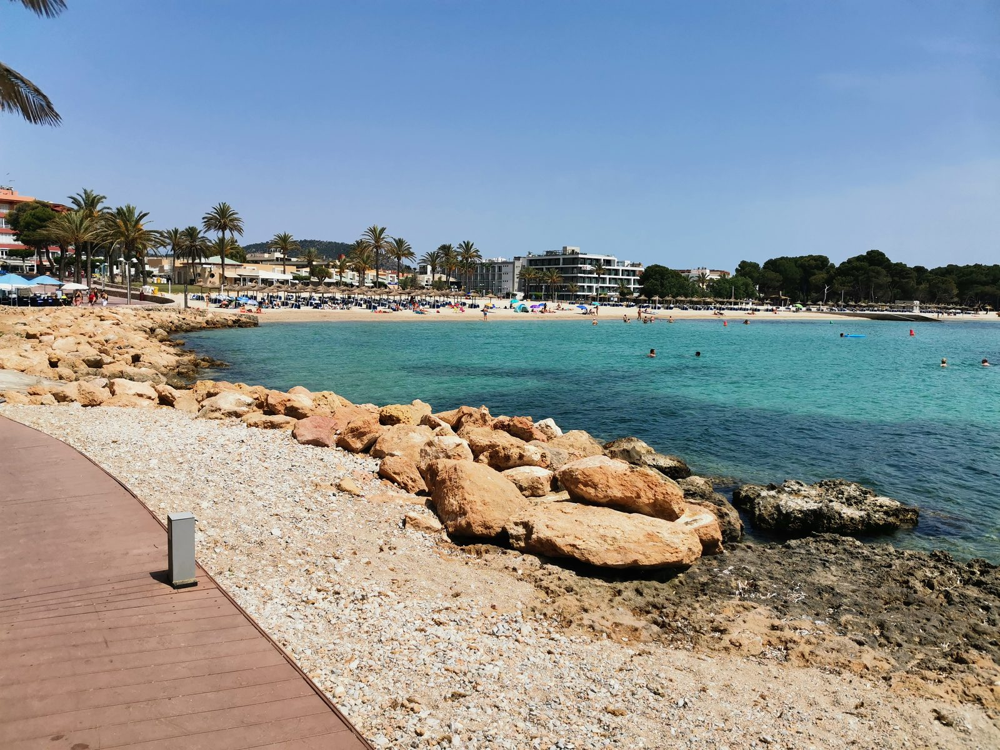

Alles Wichtige zum Apartment – von der Grundversorgung bis zu den House Rules.
Generell gilt: Alles im Apartment darf benutzt, gegessen und getrunken werden. Wenn etwas verbraucht wurde, bitte durch etwas Vergleichbares ersetzen. Das Motto ist Use & Replace und reicht von Nespresso-Kapseln über alles, was verbraucht werden kann, bis hin zum Spülmittel. Insbesondere Toilettenpapier, Müllbeutel und Trinkwasser sollen immer da sein.
Was alles im Apartment vorhanden ist und wo es liegt, steht unter Ausstattung.
Versorgung
Das Leitungswasser sollte wegen des Chlorgehalts nicht zum Trinken oder Kochen verwendet werden. Es gibt überall 5-Liter-Wasserflaschen zu kaufen. Für den Anfang steht Wasser im Bücherschrank – bitte einfach ersetzen. Das beste Wasser mit wenig Kalk ist Lanjarón (rotes Label).
Überall finden sich Mini-Supermärkte, die für den kleinen Einkauf okay sind.
Die Mülltonnen stehen im kleinen Häuschen neben dem Parkplatztor. Mülltrennung interessiert hier (leider) niemanden. Müllsäcke sind in einem der Küchenschränke.
WLAN
Gutes WLAN ist in der Wohnung vorhanden.
Sonnen & Baden
Pool: exklusiv für Bewohner des CAESARS, mit Süßwasserduschen, falls man im Meer war.
Strand: Die kleine Bucht direkt unterhalb des CAESARS ist sehr gut zum Schnorcheln. Wasserschuhe oder Flipflops sind wegen des Kieses und einiger Seeigel empfehlenswert. Auch auf dem großen Felsen beim Pool kann man es sich bequem machen, über zwei Leitern ist der Einstieg ins Wasser möglich.
Zum großen Sandstrand von Santa Ponsa kommt man über den Promenadenweg am Meer entlang oder oben raus entlang der Straße.
Wer weiter raus will: abcMallorca hat eine Karte mit den 20 schönsten Stränden Mallorcas – Top-20-Strände als PDF (fremde Seite, öffnet sich direkt als Download).
Liegen, Sonnenschirm, Schnorchel und der Rest der Strandausrüstung liegen in den Bettkästen – die vollständige Liste steht unter Ausstattung.

Mobilität
Auto mieten: Die Firma VanRell (rentacarvanrell.com) bietet günstige Autos, die man direkt im Flughafenparkhaus übergeben bekommt, ohne sich in die Schlangen von Avis oder Europcar stellen zu müssen. Immer den „Premium“-Tarif nehmen – absolut stressfrei mit Vollkasko. Direkt gegenüber vom Eingang liegt zudem eine Autovermietung, dort bekommt man auch recht spontan einen Wagen.
Der Parkplatz der Anlage kann nur noch von Dauerbewohnern genutzt werden, das Tor öffnet über eine Nummernschild-Erkennung.
Gut parken kann man, wenn man die Straße beim CAESARS links den Berg runter fährt, dann die erste links und direkt wieder rechts. Das ist eine Ringstraße, an der es auch noch einen größeren öffentlichen Parkplatz gibt.
Es gibt viele zweispurige Kreisverkehre. Die äußere Spur muss immer die nächste Ausfahrt nehmen. Also: aufpassen und mutig innen fahren, sonst wird man geschnitten. Am besten vorher noch einmal die Verkehrsregeln nachlesen.
Taxiservice Santa Ponsa: +34 971 134 700
Bus fahren geht gut: Er hält direkt vor dem CAESARS und fährt easy nach Palma, Paguera, Palmanova usw. Die Kreditkarte beim Ein- und Aussteigen dranhalten – super praktisch. Zur Rushhour aber eine schlechte Idee.
Mit Baby / Kleinkind
Das Apartment ist für Babys und Kleinkinder ausgestattet – vom Reisebett bis zum Strandzelt. Was genau da ist, steht unter Ausstattung.
House Rules
Gerne alles nutzen, aber beim Verlassen der Wohnung reinigen – zum Beispiel Nespresso-Maschine, Strand-Equipment, Spülmaschine, Kühlschrank, Abfluss im Bad und Staubsauger-Roboter.
Sollte etwas kaputtgehen, bitte Bescheid geben, dann finden wir eine Lösung. 🙂